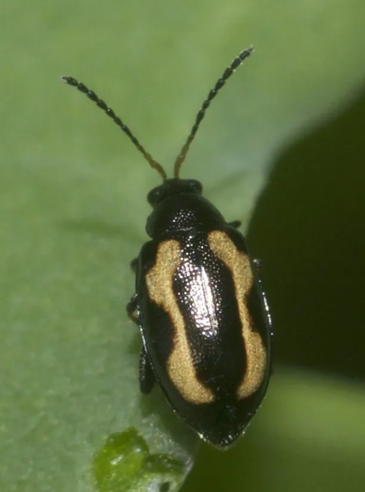

昆虫 · 动物界
黄曲条跳甲 Phyllotreta striolata

体黑亮、鞘翅中央有一条黄色弯曲纵条的小型跳甲，善跳跃，成虫咬叶成孔、幼虫蛀根，是十字花科重要害虫。
- 分类
- 门节肢动物门纲昆虫纲目鞘翅目科叶甲科属跳甲属
- 栖息环境
- 十字花科蔬菜田和附近的杂草丛，幼虫生活在土中
- 地理分布
- 世界各地，中国南北各地均有分布
- 保护级别
- 尚无保护级别；为十字花科蔬菜的重要害虫
物种志
黄曲条跳甲的体长约两毫米，体形小而椭圆，体色黑亮，鞘翅中央各有一条黄色纵条，纵条略呈弯曲的弧形，有时中断成两段，黄曲条跳甲之名由此而来。它的后足腿节特别粗壮，里面藏着发达的跳跃肌，一受惊就弹跳而起，能跳出比体长许多倍的距离。触角细长，约为体长的一半，各足胫节带黄褐色。
它分布于世界各地，在中国南北各地都有，栖息在白菜、萝卜、芥菜、油菜等十字花科蔬菜田和杂草丛，成虫白天活动，啃食叶片形成密集的小孔，严重时叶片只剩网状叶脉，幼虫生活在土中，蛀食根部表皮，造成根部腐烂。它一年发生三至六代，以成虫在枯叶或土缝中越冬，是十字花科蔬菜上最难防治的害虫之一。它尚无保护级别，防治以轮作、覆盖防虫网和药剂灌根为主。
形态与习性
- 体长约两毫米，体小而椭圆
- 鞘翅各有一条黄色弯曲纵条，可中断
- 跳跃后足腿节粗壮，受惊弹跳而起
- 成虫为害啃食叶片形成密集小孔
- 幼虫为害在土中蛀食根部表皮，造成腐烂
- 发生世代一年三至六代，以成虫越冬
趣味知识
- 它只有两毫米长，却跳得比身体长几十倍的距离。
- 菜叶上密密麻麻的小圆孔，多半是它一口一口咬出来的。
- 幼虫躲在地下啃根，地面喷药常常够不着它。